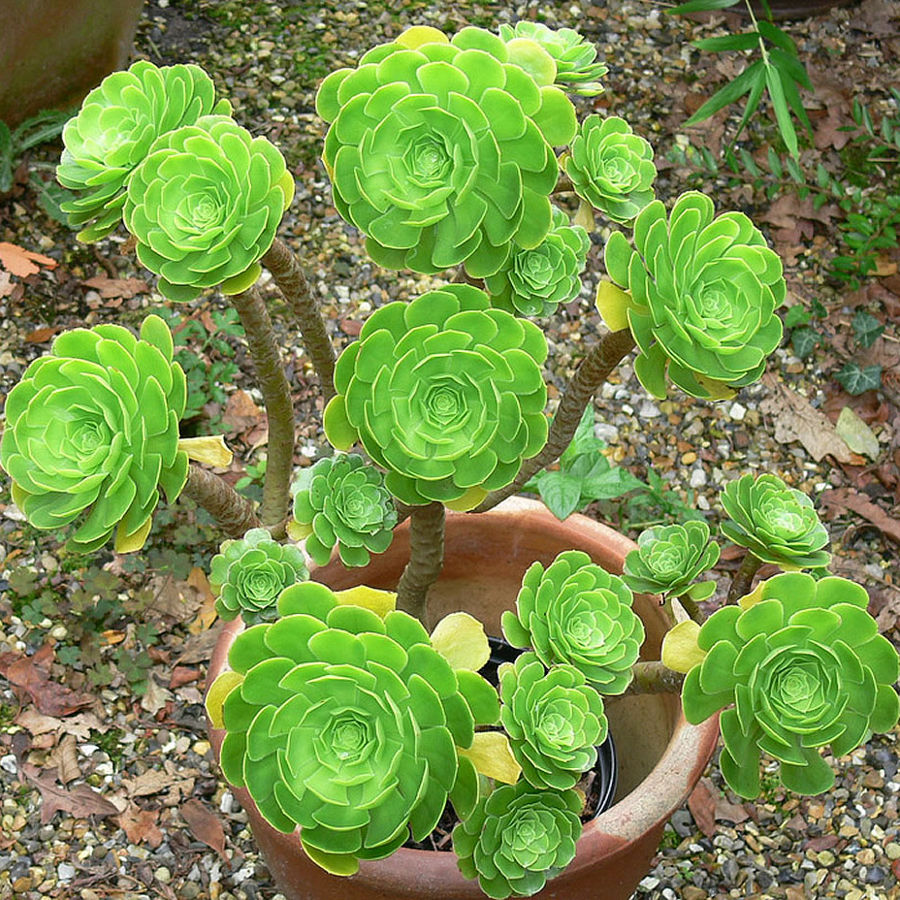
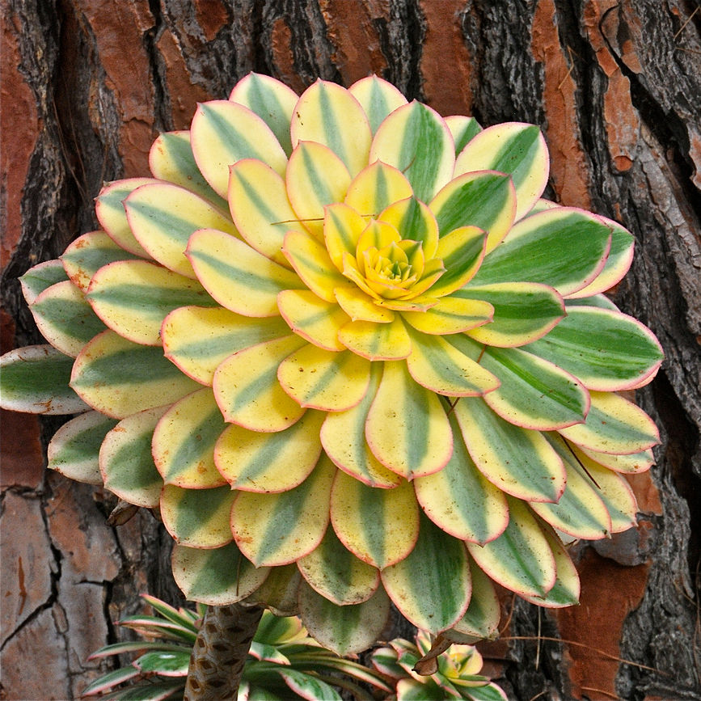
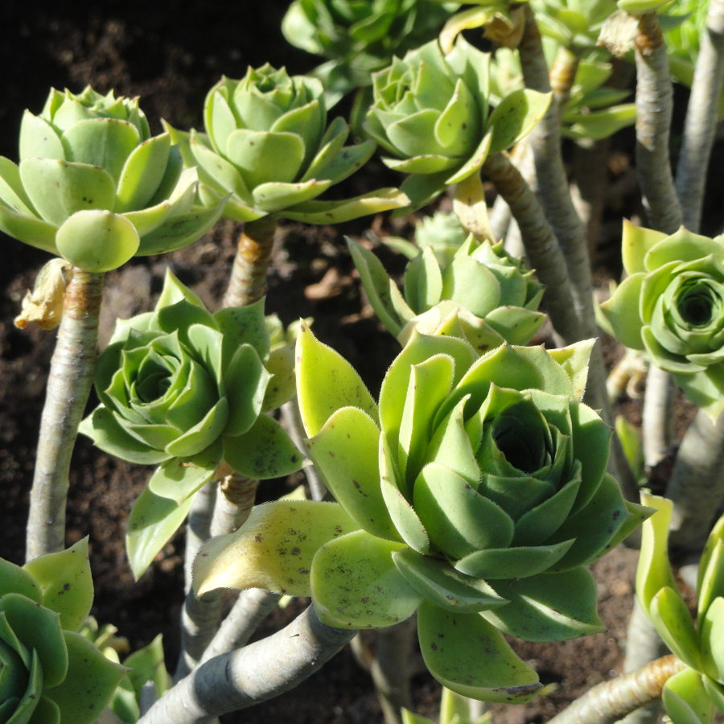
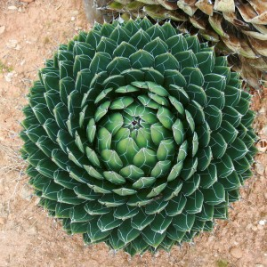
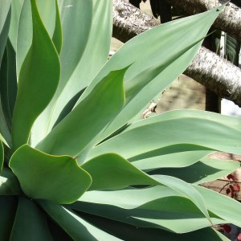
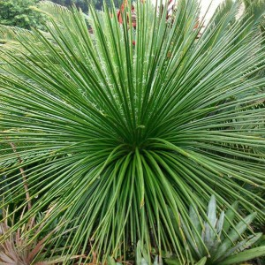
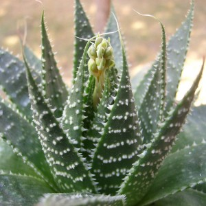
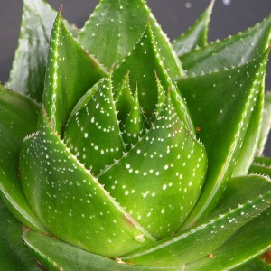

La mayoría de las plantas crasas o suculentas proceden de climas áridos, donde las precipitaciones son escasas. Por esta razón han evolucionado para retener el agua en tiempos de sequía. Esto las hace resistentes, pero no inmortales.
Recuerda que estas plantas requieren también algunos cuidados, sobre todo en climas fríos o muy húmedos, donde tendrás que controlar el drenaje del suelo y la temperatura. Si empiezan las heladas, muchas de ellas tendrán que moverse al interior de tu casa para pasar el invierno.
También es importante saber el tamaño que alcanzará cada variedad para saber dónde ubicarlas. Algunos agaves crecen más de dos metros, así que piensa bien dónde los vas a colocar si no quieres que se coman medio jardín o invadan el camino. Por el contrario, plantas como los Lithops o los Pleiospilos son muy pequeñas, por lo que son una buena opción para realizar composiciones en el interior de tu casa.
A continuación os dejamos seis variedades más.
Las cuarenta especies que componen el género Aeonium son muy resistentes a la sequía, por lo que no es necesario regarlas con demasiada frecuencia. Al contrario, durante el invierno procura no regarlas, en primavera comienza con un poco de riego y auméntalo ligeramente hacia el verano y el otoño. Asegúrate de que el sustrato drene correctamente el exceso de agua. Este género destaca por sus rosetas bastante grandes, entre 20cm y 50cm de diámetro. En general no son demasiado grandes, aunque hay algunas variedades que pueden llegar al metro de altura. Antes de adquirir una, pregunta siempre por el tamaño que alcanzará y si se adaptará al clima de tu zona.



AGAVE
En la publicación de la semana pasada decíamos que no se podía hablar de suculentas sin mencionar a los cactus. Pues bien, los agaves son otro de los géneros más conocidos de este tipo de plantas. Hay multitud de variedades de agave; las más vistosas, como el Agave Victoriae-Reginae, se utilizan ampliamente en diseño de jardines, mientras que otras se utilizan para la elaboración de mezcal o tequila, como el Agave Tequilana o el Agave Cupreata. Como dijimos al principio de este post, debes tener cuidado con el tamaño que pueden alcanzar las plantas, ya que hay variedades de agaves que pueden extenderse unos 3 metros. También debes tener cuidado con las puntas de las hojas, ya que muchas variedades desarrollan unas agujas de hasta 5cm. Las rosetas son monocárpicas, es decir, que sólo florecen una vez, tras lo cual mueren. La floración de estas plantas suele ser espectacular, ya que desarrollan tallos de hasta nueve metros de altura.



ALOE
Otra de las grandes conocidas dentro de las plantas suculentas es sin duda el Aloe. La especie más popular es Aloe Vera o Aloe Barbadensis, famosa por sus propiedades medicinales. Muchas empresas de productos cosméticos utilizan el extracto de esta planta por su capacidad hidratante, suavizante y curativa. Existen estudios que sugieren que el extracto de Aloe Vera puede ser un magnífico coadyuvante en el tratamiento de quemaduras de primer y segundo grado. Otras investigaciones apuntan a su posible efectividad contra enfermedades como la flebitis, el glaucoma, la esclerosis múltiple… Aunque aún no se han confirmado. Como plantas decorativas, las especies de Aloe más destacadas, son el Aloe Arborescens con sus flores rojas, el Aloe Ferox o el Aloe Aristata. Igual que los Agaves, algunas especies de Aloe pueden crecer bastante, así que elige bien el lugar donde lo quieres colocar.


| PAG. | |||
|---|---|---|---|
| 0 | INTRODUCCION | ||
| 1 | Argyroderma | Echeveria | Lithops |
| 2 | Sempervivum | Haworthia | Cactáceas |
| 3 | Aeonium | Agave | Aloe |
| 4 | Graptopetalum | Orostachys | Pleiospilos |